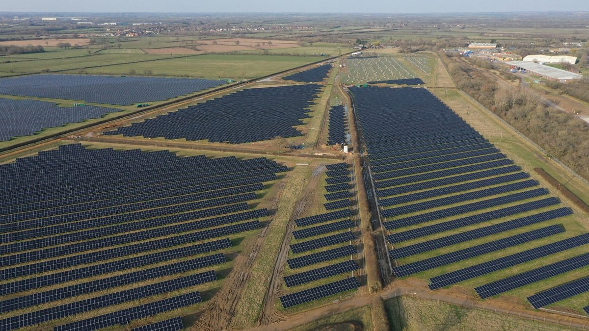

영국 옥스퍼드셔 Low Carbon Hub, 야른턴 공동체 소유 태양광 7.4MW·배터리 10MWh 짓는다며 시민 주식 공모

1인 100~10만 파운드, 2027년 1월까지 최소 50만 파운드 목표…단체 "잉여 이익은 모두 지역 저탄소 사업에, 사업 기간 지역 편익 630만 파운드"
영국 옥스퍼드셔의 사회적기업 Low Carbon Hub가 야른턴 근처에 짓는 공동체 소유 태양광·배터리 단지 'Common Lot'의 건설 자금을 시민 주식으로 모으기 시작했다. 단지는 A44 도로 옆 23에이커 부지에 태양광 7.4MW와 배터리 10MWh를 함께 들이는 사업으로, 부지는 야른턴 산업단지와 맞닿은 저등급 농지이며 지금은 농사를 짓지 않는 땅이다. 개인과 단체는 투자 플랫폼 Ethex를 통해 1인당 100파운드부터 10만 파운드까지 주식을 살 수 있고, 단체는 2026년 11월부터 2027년 1월까지 최소 50만 파운드를 모은 뒤 2027년 봄 착공할 계획이다. 단체는 단지가 해마다 7.9GWh를 생산해 3,000가구 넘게 쓸 전기를 만들고 탄소를 연 약 1,000톤 줄이며, 잉여 이익을 모두 다른 지역 저탄소 사업에 돌려 사업 기간 동안 630만 파운드의 지역 편익을 낼 것으로 추산했다. 계통 수입 연결 용량이 2MW인 배터리는 남는 태양광 전기를 담아 두었다가 수요가 몰릴 때 팔고, 낮에 값싼 전기를 사 두었다가 비쌀 때 내보내 지역 사업 수입을 늘리는 역할을 맡는다. 바버라 해먼드 대표는 처음부터 배터리를 함께 설계해 짓는 공동체 소유 태양광 부지로는 자신들이 아는 한 이번이 처음이라고 말했으며, 단체는 현재 군 안에서 공동체 소유 재생에너지 사업 55곳을 운영하고 있다고 밝혔다.
시민에너지 관점
최소 50만 파운드를 1인 100파운드부터 모은다는 것은 큰 자본 없이도 주민 여럿이 발전소의 주인이 될 수 있다는 뜻이고, 배터리까지 공동체가 가지면 전기를 언제 팔지 정해서 얻는 이익도 지역에 남는다. 일본 홋카이도에서도 2001년 시민들이 돈을 모아 세운 풍차가 하마톤베쓰에서 처음 돌기 시작한 뒤 시민 출자 발전소가 다른 지역으로 퍼져 나갔다. 저장장치는 큰 기업이나 다루는 설비라는 우려가 있지만, 이 사업은 지역 사회적기업이 운영을 맡고 시민이 지분을 나눠 갖는 방식으로 그 벽을 넘으려 한다. 국내에서도 남는 태양광 전기를 버리는 출력제어가 늘어나는 만큼, 태양광과 저장장치를 한데 묶은 주민 소유 발전소를 뒷받침할 제도를 서둘러 만들어야 한다.
출처: Small Cap News 2026-11-05 Sam Allcock 원문 보기
英オックスフォードシャーのLow Carbon Hub、ヤーントンにコミュニティ所有の太陽光7.4MW・蓄電池10MWhを建設へ、市民向け株式募集
1人100〜10万ポンド、2027年1月までに最低50万ポンドが目標…団体「余剰利益はすべて地域の低炭素事業に、事業期間中の地域便益は630万ポンド」
英国オックスフォードシャーの社会的企業Low Carbon Hubが、ヤーントン近郊に建設するコミュニティ所有の太陽光・蓄電池施設「Common Lot」の建設資金を、市民からの株式出資で集め始めた。施設はA44道路沿いの23エーカーの用地に太陽光7.4MWと蓄電池10MWhを併設する計画で、用地はヤーントン工業団地に隣接する低等級の農地で、現在は耕作されていない。個人や団体は投資プラットフォームEthexを通じて1人100ポンドから10万ポンドまで株式を購入でき、団体は2026年11月から2027年1月までに最低50万ポンドを集め、2027年春に着工する予定だ。団体の試算では、施設は年7.9GWhを発電して3,000世帯以上分の電力をまかない、炭素排出を年約1,000トン減らし、余剰利益をすべて地域の他の低炭素事業に回すことで、事業期間中に630万ポンドの地域便益を生むという。系統からの受電容量が2MWの蓄電池は、余った太陽光の電気をためて需要が高まったときに売り、日中の安い電気を買っておいて高いときに放出することで、地域事業の収入を増やす役割を担う。バーバラ・ハモンド代表は、最初から蓄電池を一体で設計・建設するコミュニティ所有の太陽光用地は、知る限り今回が初めてだと述べ、団体は現在、州内でコミュニティ所有の再生可能エネルギー事業55カ所を運営しているとしている。
市民エネルギーの視点
最低50万ポンドを1人100ポンドから集めるということは、大きな資本がなくても多くの住民が発電所の持ち主になれるということであり、蓄電池まで地域が持てば、電気をいつ売るかを決めて得る利益も地域に残る。日本の北海道でも2001年に市民が資金を出し合って建てた風車が浜頓別町で初めて回り始め、その後、市民出資の発電所が各地に広がった。蓄電池は大企業が扱う設備だという懸念もあるが、この事業は地域の社会的企業が運営を担い、市民が持ち分を分け合う形でその壁を越えようとしている。韓国でも余った太陽光の電気を捨てる出力制御が増えているだけに、太陽光と蓄電池を一体にした住民所有の発電所を支える制度を急いで整えるべきだ。
出典: Small Cap News 2026-11-05 Sam Allcock 原文を読む
英国牛津郡Low Carbon Hub拟在亚恩顿建设社区所有的7.4MW光伏和10MWh储能，面向市民发售股份
每人100至10万英镑，目标在2027年1月前筹集至少50万英镑…机构称"盈余利润全部投入本地低碳项目，项目期内地方效益达630万英镑"
英国牛津郡社会企业Low Carbon Hub开始通过向市民发售股份，为其在亚恩顿附近建设的社区所有光伏储能园区"Common Lot"筹集建设资金。园区位于A44公路旁一块23英亩的土地上，将同时建设7.4MW光伏和10MWh电池储能；该地块紧邻亚恩顿工业区，是目前未耕种的低等级农地。个人和团体可通过投资平台Ethex认购股份，每人100英镑至10万英镑，机构计划在2026年11月至2027年1月间筹集至少50万英镑，并于2027年春季开工。据机构估算，园区每年发电7.9GWh，可供3,000多户家庭用电，每年减少碳排放约1,000吨；盈余利润将全部投入本地其他低碳项目，在项目期内带来630万英镑的地方效益。储能电池的电网受电容量为2MW，可储存多余的光伏电力并在需求上升时出售，也可在白天买入便宜电力、在电价高时放出，从而增加本地项目的收入。机构负责人芭芭拉·哈蒙德表示，据其所知，这是首个从一开始就把储能与光伏一并设计建设的社区所有光伏场地；机构称目前在郡内运营55个社区所有的可再生能源项目。
市民能源视角
从每人100英镑起筹集至少50万英镑，意味着即使没有大笔资本，许多居民也能成为电站的主人；如果连储能也归社区所有，决定何时卖电所带来的收益也会留在当地。日本北海道也是在2001年由市民集资建成的风机首先在滨顿别町转动起来，此后市民出资电站扩展到其他地区。有人担心储能是只有大企业才能驾驭的设备，但这个项目由本地社会企业负责运营、市民分享股权，正试图跨越这道门槛。韩国弃光限电日益增多，应尽快建立制度，支持把光伏和储能结合在一起的居民所有电站。
来源: Small Cap News 2026-11-05 Sam Allcock 查看原文
Oxfordshire's Low Carbon Hub opens public share offer to build community-owned 7.4MW solar and 10MWh battery park at Yarnton
Investors can put in £100 to £100,000 each, with a target of at least £500,000 by January 2027; the organisation says all surplus profit will go to local low-carbon projects, delivering £6.3 million in community benefit over the park's life
Low Carbon Hub, a social enterprise in Oxfordshire, England, has begun raising money from the public through a share offer to build Common Lot, a community-owned solar and battery park near Yarnton. The scheme combines 7.4MW of solar panels with 10MWh of battery storage on a 23-acre site off the A44, on low-grade agricultural land next to Yarnton industrial estate that is not currently farmed. Individuals and organisations can buy shares through the investment platform Ethex for between £100 and £100,000 each, and the organisation plans to raise at least £500,000 between November 2026 and January 2027, with construction due to start in spring 2027. Low Carbon Hub estimates the park will generate 7.9GWh a year, enough for more than 3,000 homes, cut carbon emissions by around 1,000 tonnes a year, and, by channelling all surplus profit into other local low-carbon schemes, deliver £6.3 million in community benefit over its lifetime. The battery, with a 2MW grid import connection, will store surplus solar power to sell when demand rises and buy cheaper electricity during the day to export later when prices are higher, raising income for community projects. Chief executive Barbara Hammond said that, as far as the organisation knows, this is the first community-owned solar site built with battery capacity designed in from the start, and the organisation says it already runs 55 community-owned renewable energy schemes across the county.
Citizen Energy View
Raising at least £500,000 in stakes starting from £100 means many residents can become owners of a power plant without large capital, and when the community also owns the battery, the gains from deciding when to sell electricity stay local as well. In Hokkaido, Japan, a wind turbine paid for by pooled citizen money began turning in Hamatonbetsu in 2001, and citizen-financed power plants then spread to other regions. Some worry that battery storage is equipment only big companies can handle, but this scheme aims to clear that hurdle by having a local social enterprise run it while citizens share the ownership. With curtailment of surplus solar power rising in Korea too, rules that support resident-owned plants combining solar and storage should be put in place without delay.
Source: Small Cap News 2026-11-05 Sam Allcock Read the original